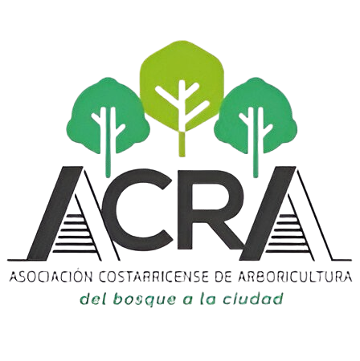
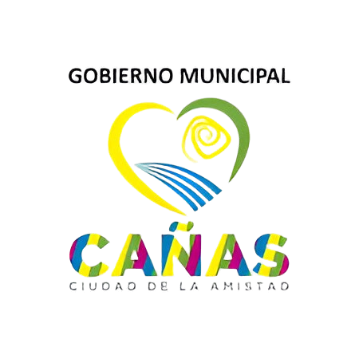

¿De qué trata el proyecto de Arbolado Urbano?
🌿El propósito de este proyecto es funcionar como una
herramienta que potencie el desarrollo de un plan de manejo
integral del árbol urbano, mediante la articulación de la
participación ciudadana, las instituciones locales y la
universidad. Primeramente, se desarrollará un censo del árbol
urbano con el apoyo de herramientas de Sistema de Información
Geográfica, para la recopilación de datos de campo y el
seguimiento del manejo para cada árbol individual.🌿
🌿Seguidamente, se dispondrá de dicha información en tiempo
real y oportuno en un visor de acceso público. Los procesos y
herramientas que se construirán en este proyecto, se pondrán
al servicio de los gobiernos locales, para que sean estos
quienes se apropien del seguimiento del manejo del arbolado
urbano.🌿

Nuestra Meta
🌿 Mejorar la gestión y conservación del arbolado urbano en sitios públicos dentro del perímetro urbano, mediante la implementación de tecnologías de información geográfica que permita obtener información precisa y actualizada sobre el estado del arbolado, su distribución y necesidades de mantenimiento, para la toma de decisiones informadas por parte de los gobiernos locales, en beneficio de la calidad de vida de los habitantes y la sostenibilidad ambiental de la zona urbana. 🌿
Actividades desarrolladas por la persona estudiante
- 📝 Desarrollo y actualización de protocolos: salud ocupacional, gestión del riesgo, procedimientos de campo.
- 📊 Actualización de base de datos: contactos organizacionales, lista taxonómica de especies, otros.
- 📱 Análisis y/o desarrollo de herramientas: aplicaciones móviles, herramientas de integración de bases de datos.
- 🛠️ Prototipado: elaboración de etiquetas para cada árbol individual, construcción de herramientas de campo.
- 📍 Registrar la geolocalización y características de cada árbol.
- 📲 Uso de formularios digitales y aplicaciones móviles.
- 🌿 Verificación de especies con registros fotográficos y bases de datos.
- 🗺️ Corrección de geolocalización en el sistema de información geográfica.
- 🌍 Desarrollo de herramientas web de visualización de datos.
- 🗺️ Construcción de cartografía institucional de la cobertura arbórea cantonal.
- 📊 Desarrollo de un tablero de consulta de servicios ecosistémicos.
- 🔍 Monitoreo y verificación de la información recopilada.
- 📌 Verificación de precisión en datos recolectados por estudiantes.
Colaboradores
Estas son las instituciones que ya confían en nuestro proyecto y colaboran activamente con nosotros. Si compartes nuestra visión y quieres formar parte de esta iniciativa, estaremos encantados de sumar esfuerzos contigo. ¡Contáctanos y hagamos equipo!


Consulta el resumen del proyecto
Para más detalles sobre el proyecto de arbolado urbano, descarga el documento oficial en PDF.
📥 Descargar PDF